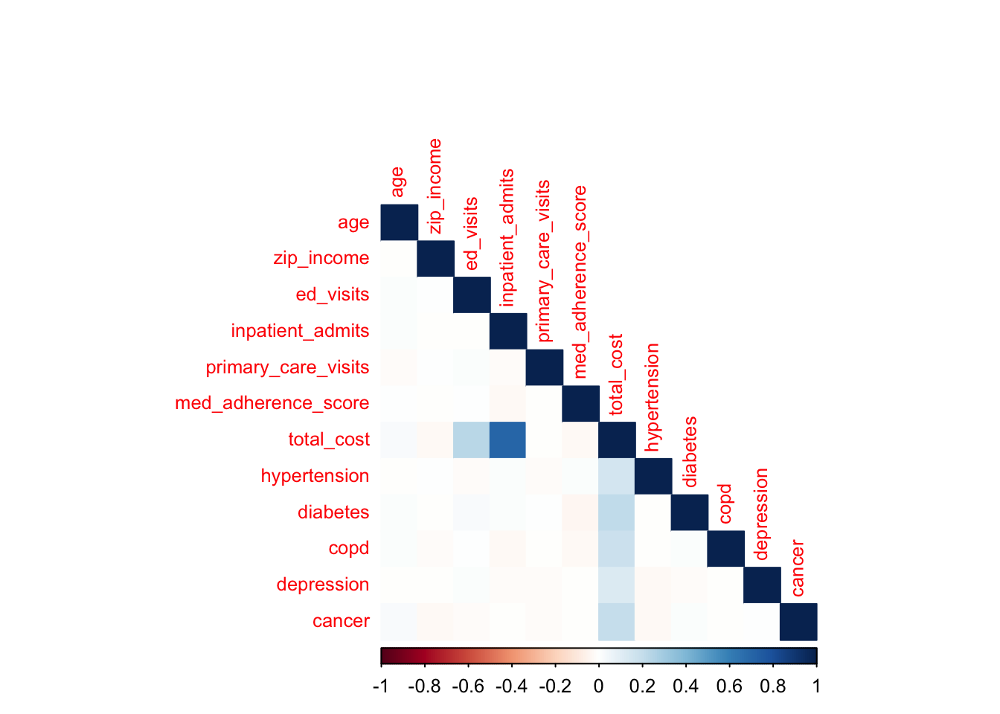
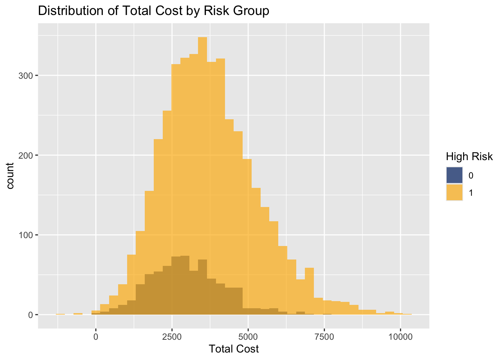
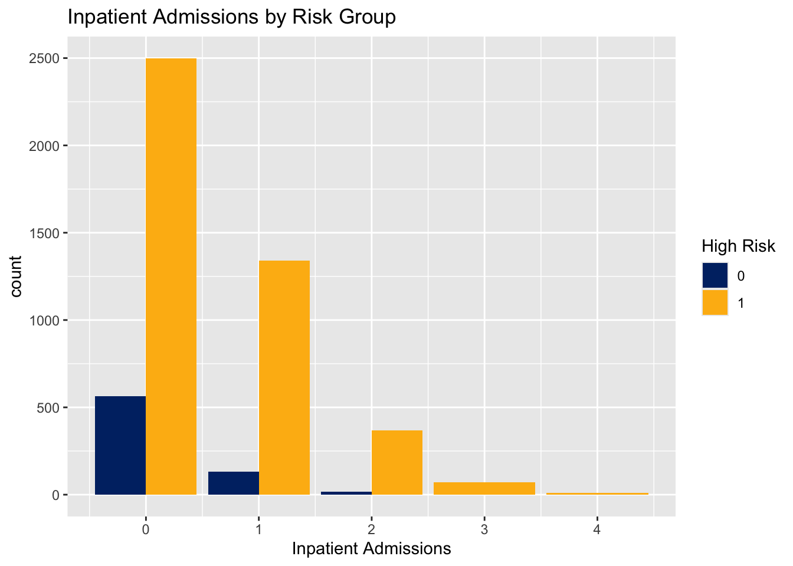
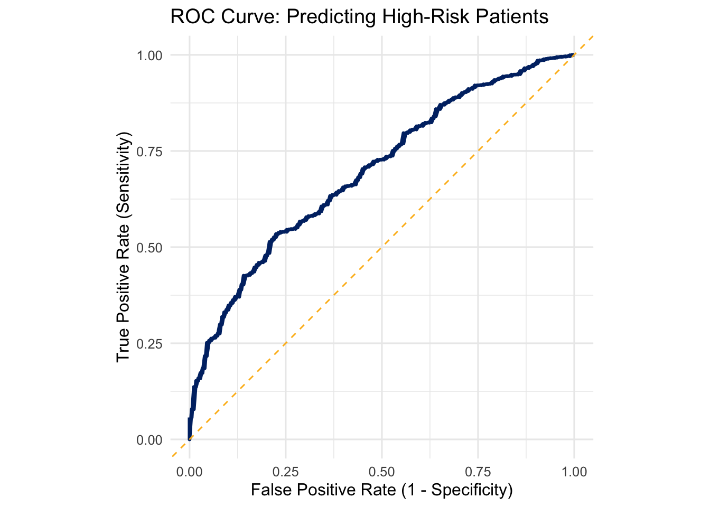
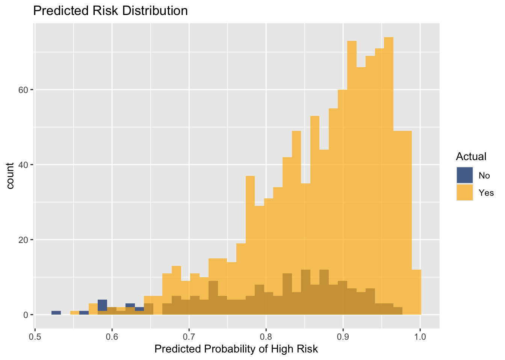

patient_id age sex zip_income hypertension diabetes copd depression cancer
1 P0001 39 Male 47093 1 0 0 0 0
2 P0002 75 Female 73041 0 1 0 0 1
3 P0003 47 Female 36649 0 1 0 0 0
4 P0004 82 Female 78696 0 1 0 1 0
5 P0005 86 Female 69659 1 0 0 0 0
6 P0006 21 Male 60362 0 0 0 0 0
ed_visits inpatient_admits primary_care_visits med_adherence_score total_cost
1 2 0 1 0.7209590 2140
2 0 0 4 0.7887221 4238
3 2 0 3 0.6692531 3388
4 1 0 2 0.5731406 2755
5 2 1 6 0.8850971 4494
6 1 1 3 0.7475626 4323
high_risk
1 1
2 1
3 1
4 0
5 1
6 1Value Validation Project: Population Health Analytics
Executive Summary
To demonstrate my fit for this team at Ochsner, rather than a traditional cover letter, I am submitting a simulated case study of my abilities. This project simulates a value-based population health strategy leveraging predictive modeling to segment high-risk patients. By integrating clinical and utilization data, we estimate that targeted care management for the top decile could yield a 6.7% ROI within 12 months. This framework is to demonstrate my workflow and approaches to opportunities I might face on this team, rather than specific findings.
Objectives
Reduce avoidable utilization, target care management, quantify ROI, provide a pilot to transfer to real world data.
Data & Methods
- Simulated dataset - we simulated a variety of patient characteristics and claims data in a sample of patients at Ochsner hospitals in the greater New Orleans metro area (n=5,000)
- A full script of all data generation, output and analysis can be found in an attached Appendix if requested
Structured Data Management Example (SQL Integration)
While most modeling work is done in R, SQL remains essential for summarizing, cleaning, and staging patient-level data from claims and EMRs. Below is a representative query using sqldf to analyze the distribution of high-risk patients by sex and income bracket—showcasing how SDOH proxies might inform any of our stratification strategies.
# Create a derived income bracket for reporting
patient_data$income_bracket <- cut(
patient_data$zip_income,
breaks = c(-Inf, 40000, 60000, 80000, Inf),
labels = c("<40K", "40–60K", "60–80K", "80K+")
)
# SQL-style summary: high-risk patients by sex and income bracket
sql_summary <- sqldf("
SELECT
sex,
income_bracket,
COUNT(*) AS total_patients,
SUM(high_risk) AS high_risk_patients,
ROUND(100.0 * SUM(high_risk) / COUNT(*), 1) AS pct_high_risk
FROM patient_data
GROUP BY sex, income_bracket
ORDER BY income_bracket, sex
")
sql_summary sex income_bracket total_patients high_risk_patients pct_high_risk
1 Female 40–60K 1126 957 85.0
2 Male 40–60K 1104 967 87.6
3 Female 60–80K 766 651 85.0
4 Male 60–80K 801 685 85.5
5 Female 80K+ 149 122 81.9
6 Male 80K+ 153 128 83.7
7 Female <40K 441 386 87.5
8 Male <40K 460 391 85.0| Variable | Not High Risk N = 7131 |
High Risk N = 4,2871 |
p-value2 |
|---|---|---|---|
| age | 47.2 (20.1) | 54.9 (20.7) | <0.001 |
| ZIP-Level Income | 55,687.7 (15,787.5) | 54,807.7 (16,085.2) | 0.3 |
| ED Visits | |||
| 0 | 213 (30%) | 915 (21%) | |
| 1 | 262 (37%) | 1,397 (33%) | |
| 2 | 142 (20%) | 1,098 (26%) | |
| 3 | 71 (10.0%) | 554 (13%) | |
| 4 | 18 (2.5%) | 235 (5.5%) | |
| 5 | 6 (0.8%) | 68 (1.6%) | |
| 6 | 0 (0%) | 14 (0.3%) | |
| 7 | 1 (0.1%) | 5 (0.1%) | |
| 9 | 0 (0%) | 1 (<0.1%) | |
| Inpatient Admits | |||
| 0 | 563 (79%) | 2,499 (58%) | |
| 1 | 132 (19%) | 1,341 (31%) | |
| 2 | 18 (2.5%) | 367 (8.6%) | |
| 3 | 0 (0%) | 70 (1.6%) | |
| 4 | 0 (0%) | 10 (0.2%) | |
| Medication Adherence Score | 0.7 (0.1) | 0.7 (0.1) | 0.8 |
| Total Cost | 2,999.2 (1,208.3) | 3,747.2 (1,552.9) | <0.001 |
| hypertension | 254 (36%) | 1,828 (43%) | <0.001 |
| diabetes | 132 (19%) | 1,115 (26%) | <0.001 |
| copd | 67 (9.4%) | 663 (15%) | <0.001 |
| depression | 99 (14%) | 859 (20%) | <0.001 |
| cancer | 22 (3.1%) | 227 (5.3%) | 0.012 |
| 1 Mean (SD); n (%) | |||
| 2 Wilcoxon rank sum test; Pearson’s Chi-squared test | |||
Exploratory Data Analysis
To better understand the drivers of risk and opportunity for intervention, we conducted exploratory data analysis on the synthetic population.
| Variable | N = 5,0001 |
|---|---|
| age | 53.8 (20.8) |
| ZIP-Level Income | 54,933.2 (16,044.5) |
| ED Visits | |
| 0 | 1,128 (23%) |
| 1 | 1,659 (33%) |
| 2 | 1,240 (25%) |
| 3 | 625 (13%) |
| 4 | 253 (5.1%) |
| 5 | 74 (1.5%) |
| 6 | 14 (0.3%) |
| 7 | 6 (0.1%) |
| 9 | 1 (<0.1%) |
| Inpatient Admits | |
| 0 | 3,062 (61%) |
| 1 | 1,473 (29%) |
| 2 | 385 (7.7%) |
| 3 | 70 (1.4%) |
| 4 | 10 (0.2%) |
| Primary Care Visits | 3.0 (1.7) |
| Medication Adherence Score | 0.7 (0.1) |
| Total Cost | 3,640.5 (1,530.9) |
| HTN | 2,082 (42%) |
| diabetes | 1,247 (25%) |
| COPD | 730 (15%) |
| depression | 958 (19%) |
| cancer | 249 (5.0%) |
| 1 Mean (SD); n (%) | |

- This correlation matrix suggests that total cost is strongly associated with increased inpatient visits as well as moderately associated with the presence of chronic conditions


- Visualizations show that a small subset of patients (top 10%) drive a disproportionate share of inpatient admits and total costs
- High risk groups appear to experience generally higher cost and inpatient admissions than low risk groups
| High Risk vs Not High Risk: Key Characteristics | ||||||
|---|---|---|---|---|---|---|
| Risk_Group | Mean Age | % Female | Avg Inpatient Admits | Avg ED Visits | Avg Total Cost ($) | Avg Chronic Conditions |
| Not High Risk | 47.2 | 51.3 | 0.2 | 1.2 | 2,999.0 | 1.6 |
| High Risk | 54.9 | 49.4 | 0.5 | 1.6 | 3,747.0 | 1.6 |
- High-risk patients are more likely to be older, with higher ED costs, and higher inpatient utilization.
These findings support the need for a tiered risk segmentation strategy to prioritize care management resources effectively.
Risk Score Modeling
| Logistic Regression Coefficients: High-Risk Prediction | ||||
|---|---|---|---|---|
| Predictor | Estimate | Std. Error | P-Value | |
| (Intercept) | -0.321 | 0.318 | 0.312 | |
| age | 0.017 | 0.002 | 0.000 | *** |
| sexMale | 0.149 | 0.097 | 0.125 | |
| income_bracket40–60K | -0.028 | 0.136 | 0.837 | |
| income_bracket60–80K | -0.023 | 0.144 | 0.874 | |
| income_bracket80K+ | -0.072 | 0.218 | 0.740 | |
| hypertension | 0.328 | 0.101 | 0.001 | ** |
| diabetes | 0.421 | 0.122 | 0.001 | ** |
| copd | 0.740 | 0.167 | 0.000 | *** |
| depression | 0.419 | 0.136 | 0.002 | ** |
| cancer | 0.533 | 0.273 | 0.051 | . |
| ed_visits | 0.240 | 0.043 | 0.000 | *** |
| inpatient_admits | 0.917 | 0.097 | 0.000 | *** |
| med_adherence_score | 0.184 | 0.340 | 0.588 | |
| Note: *** p < 0.001, ** p < 0.01, * p < 0.05 | ||||
| Confusion Matrix: Model Predictions vs Actual | ||
|---|---|---|
| Actual Class | Predicted: No | Predicted: Yes |
| No | 76 | 210 |
| Yes | 102 | 861 |


A logistic regression model was trained to predict high-risk patients based on demographics, chronic conditions, and recent utilization patterns.
- The model achieved an AUC of 0.697, indicating modest discriminative ability—sufficient for exploratory stratification, though not deployment-ready without further tuning.
- Features with strongest predictive value included inpatient admits, diabetes, and COPD.
- The confusion matrix shows balance between sensitivity and specificity at a 0.8 threshold.
- The predicted risk distribution highlights some moderate separation between high- and low-risk patients, enabling future segmentation.
- Note: The model predicted all patients as high-risk at the default threshold. This is a common challenge in imbalanced classification and would be addressed through threshold optimization and calibration in a production setting.
This model offers a prototype framework that could inform tiered outreach strategies under value-based care, pending validation with real patient data.
Cost Savings & ROI Estimation
| Estimated ROI: Targeted Care Management Program | |||||
|---|---|---|---|---|---|
| Patients Targeted | Avg Cost (Est.) | Est. Savings/Patient | Total Estimated Savings | Program Cost | ROI (12-Month) |
| 125 | $3,556 | $427 | $53,341 | $50,000 | 6.7% |
To quantify business value, we modeled a care management program targeting the top 10% of predicted high-risk patients.
- Patients Targeted: 125
- Estimated 12-Month Cost Savings: $53,341
- Program Cost: $50,000
- Projected ROI: 6.7%
Assuming an average savings of +6.7% in total cost of care, we see some signal in our methods of risk-tiering, consistent with benchmarks for high-impact care coordination efforts.
| Patients Flagged for High-Risk Outreach | |||||
|---|---|---|---|---|---|
| Age | Sex | ED Visits | Inpatient Admits | Med Adherence Score | Predicted Risk Score |
| 66 | Male | 2 | 4 | 0.61 | 1.00 |
| 78 | Female | 3 | 3 | 0.80 | 1.00 |
| 61 | Male | 3 | 3 | 0.87 | 0.99 |
| 56 | Male | 2 | 3 | 0.61 | 0.99 |
| 69 | Male | 3 | 2 | 0.94 | 0.99 |
The table below shows a sample of five patients identified in the top 10% of predicted risk. These individuals share patterns of elevated utilization (e.g., repeat admissions), low-to-moderate medication adherence, and higher overall risk scores.
Targeted care management—such as intensive case reviews or social work referrals—could help reduce unnecessary admissions and improve adherence, supporting both cost containment and clinical outcomes.
This micro-level lens highlights how predictive modeling informs actionable, patient-level decisions under value-based care.
Strategic Implications
This analysis demonstrates how predictive analytics can enable targeted care management and improve performance under value-based care agreements. By identifying high-risk patients in advance, our team might be able to:
- Reduce preventable admissions and emergency department visits
- Allocate care coordination resources more efficiently
- Quantify and track impact on total cost of care
- Align operational priorities with population health goals
The risk model provides a scalable foundation for tiered interventions, prospective outreach, and continuous ROI measurement—all aligned with the analytics and leadership responsibilities of the AVP role.
Conclusion
This project highlights a practical and scalable approach to value-based performance optimization. If I were serving this team with access to real patient data, this framework could be piloted and adapted to Ochsner’s specific contracts, care models, and operational realities.
I look forward to your consideration and talking soon.